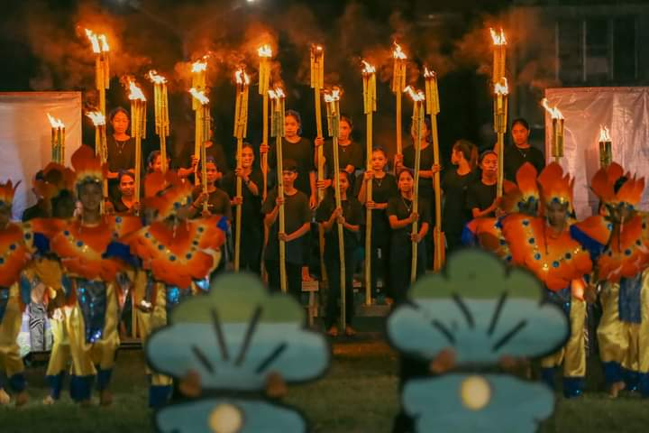
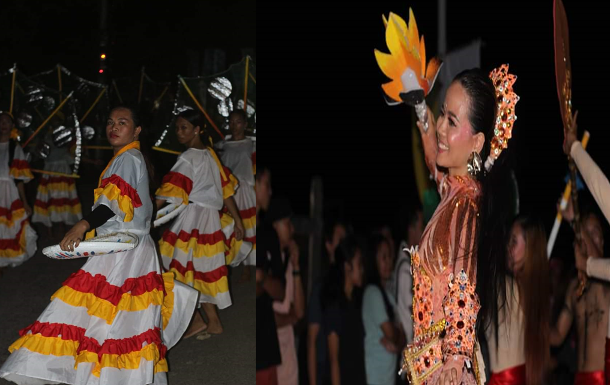
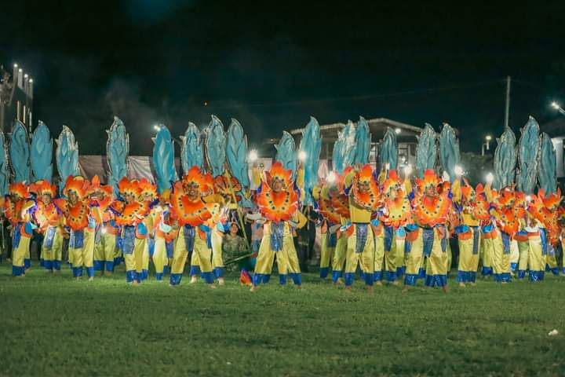

Step into the enchanting world of the Lawag Festival, where the air is filled with elegance and the night sky dances with flickering torchlights
Nestled on a solid ridge of rock, crafted by nature's own hand, Lawang stands tall like a majestic fortress, known in ancient times as Makarato.

Its towering presence serves as a constant reminder of the rich history and heritage that define this remarkable town.
As the Lawag carriers gracefully march forward, they bring to life the ancient tale of Karagrag,
ss
a valiant datu, and his radiant wife, Princess Bingi.

Renowned for her unmatched beauty among the Bisayans, Princess Bingi's allure has fascinated generations,
leaving an indelible mark on the folklore of Laoang.

This is the vibrant and colorful Lawag Festival, a transcendent experience that will transport you
to a bygone era, where history and legend intertwine to create an unforgettable celebration of
Laoang's vibrant spirit and unwavering pride.